录制软件使用教程
市场上的录屏软件有很多，您可以选择自己喜欢的录屏软件，也可以采用下面这款录屏软件录制您的课程。
如何使用ApowerREC？
ApowerREC是一款包含注释、创建计划任务、上传视频、截图等多功能录屏软件。为了方便使用ApowerREC，大家可以根据以下教程以及相关的安装指南和技术支持服务，轻松掌握并正确使用ApowerREC。
（注：本文来自www.apowersoft.cn官网，请下载正版软件）
一、开始——安装指南
请登录www.apowersoft.cn官网下载正版，如有疑问，请联系咨聊客服；
在弹出的窗口中，可以选择首选语言，然后点击“下一步”。
进入“选择附加任务”窗口时，请确认是否需要创建桌面快捷方式或者开机时自动启动。
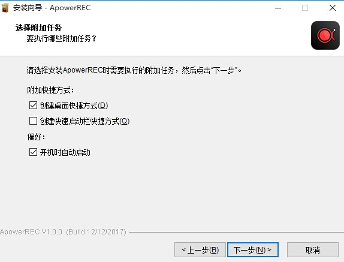
几秒后安装成功，然后可以勾选“立即运行ApowerREC”并点击“完成”退出设置。
二、界面设置
尽管使用默认设置可以正常使用ApowerREC，但是根据个人喜欢调整设置可以更加方便录屏。
本软件共包含两种设置：基本设置以及高级设置。
1、基本设置
在该功能菜单下，可以对许多基本功能进行设置，从而让录屏更加方便并且能够快速找到已录制的视频。
悬浮框
录制开始时，可以通过设置或者将主界面最小化将其隐藏起来。该设置对于在录制过程中希望屏幕上不会显示任何其他无关软件的用户是非常有必要的。
输出格式
通过设置“输出格式”，用户可以选择与设备相兼容的格式，以便导出他们想要的文件并供以后使用。除了可以设置视频和音频格式，还可以设置截图的图片格式。
文件管理
用户可以选择一个特定的文件夹保存已录制的所有视频，包含截图。这样，以便于您之后如果需要寻找某个视频，可以直接进入该文件夹并轻松找到视频。
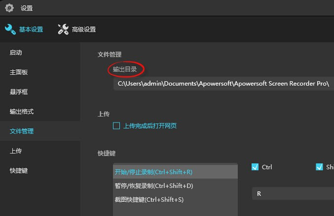
快捷键
设置好快捷键，便可以无需使用悬浮框，直接录制视频。软件已经提供了一些可以直接使用的默认快捷键。不过，如果您觉得某些快捷键不好记住的话，可以自定义修改并挑选合适的快捷键。
2、高级设置
进入“高级设置”，可以对录屏的质量以及样式进行相应设置。
鼠标设置
如果您想要在屏幕上进行动作演示，可以通过该设置，选择合适的鼠标样式。您还可以选择是否显示鼠标、记录鼠标点击或者显示鼠标区域。
录屏质量
在视频质量方面，您可以设置性能模式、帧速率、比特率以及编码器。除此之外，还可以对音频质量进行设置。
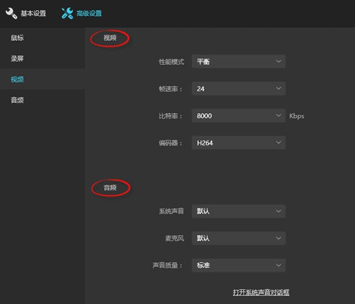
三、录屏
ApowerREC支持录制全屏、自定义区域、摄像头以及创建画中画视频。与此同时，可以同步录制系统声音、麦克风声音或者两者兼有。如需了解如何使用它来进行录屏，可以参考以下说明。
1、开始录制
1）选择录制范围：录制区域可以选为全屏或者是自定义区域录制，点击第一个按钮选择全屏录制，点击第二个按钮，你可以根据需求自定义录制范围和调整录影框大小。
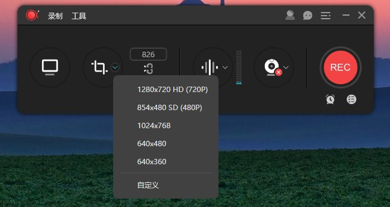
调整录影范围时，你也可以锁定尺寸比例或选择软件推荐的比例来进行录制。
2）选择音源输出：点击声音按钮来选择是否录制声音，在下拉列表中，有三种模式可选，“系统声音”、“麦克风”和“系统声音和麦克风”，按需选择正确的音源。同时，你可以在“选项”中调节系统声音和麦克风的音量。
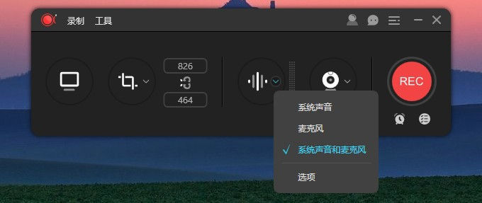
3）摄像头录制：如果你想录制画中画效果，你可以直接点击摄像头按钮，同时录制摄像头画面和屏幕操作；如果你想单独录制摄像头画面，则可以从顶部工具栏“录制”的下拉列表中选择“摄像头”，然后就会在倒计时后直接记录摄像头画面了。
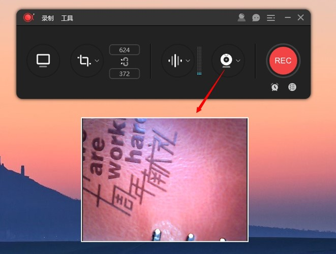
点击“REC”按钮或按下快捷键(Ctrl+Shift+R)开始录制。当倒计时结束时，软件会立即录制屏幕。
注意：如果你只想录制声音，可以点击“录制”>“音频”，倒计时结束后就会录制没有画面的音频。另外，你也可以通过点击“围绕鼠标”，选定画面比例，录制跟随鼠标方向移动的屏幕画面。
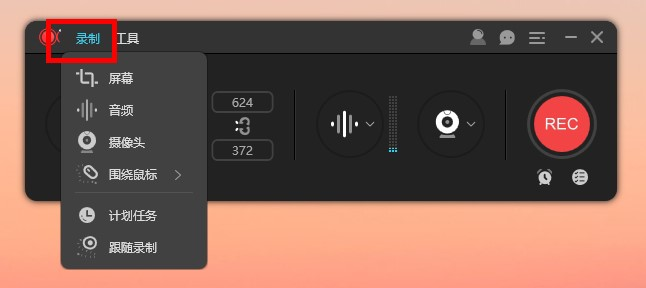
2、悬浮框
录制开始时，屏幕上会出现一个工具栏，里面包含暂停/停止、截图、注释等许多有用功能。如果不想在屏幕上显示工具栏，可以点击并将其拖至屏幕任何一侧的边缘再释放鼠标。工具栏将会立刻隐藏并变成悬浮工具栏。当您想要使用它的时候，可以将鼠标移至该区域，它就会自动显示出来。
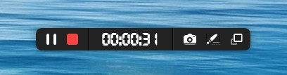
3、录屏注释
为了让视频更加具有指导性，可以在录制的时候点击工具栏上的笔状“编辑”按钮。实时编辑功能包含添加线段、文字、箭头、矩形、椭圆等等。
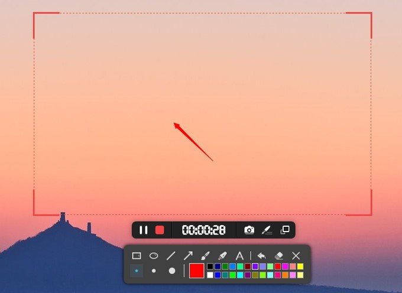
4、停止录制
如果你想停止录制，你可以手动点击悬浮条的停止按钮，或者设置自动停止时间。点击“REC”下方的时钟按钮，在弹出的窗口中设置当视频文件达到一定的录制时长和文件大小时就会自动停止录制，更改后开始录制即可。
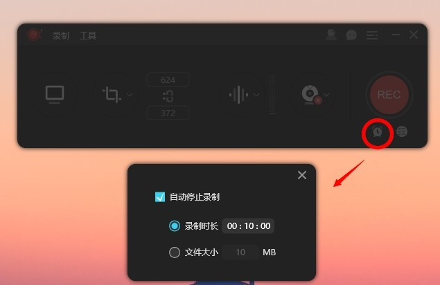
5、预览和编辑视频
完成录制后，你可以在文件列表中双击打开视频文件进行预览。在预览窗口中，你可以进行截图、编辑或分享视频等操作。如果需要编辑视频，点击右下方的笔状按钮进入编辑界面，你可以截取部分视频片段或添加图片和文字水印，完成操作后点击导出即可保存。
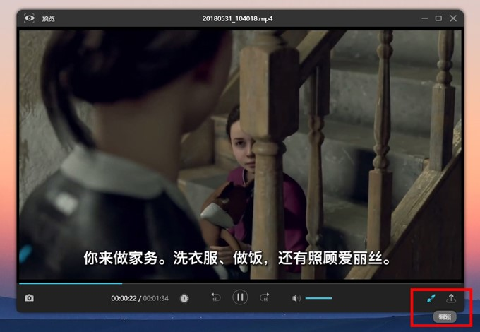
四、创建录屏任务
ApowerREC包含两种录屏任务功能。其中一种是“计划任务”，当您离开电脑时，它可以自动开启录屏功能。通常应用于录制直播视频，网络会议等等。
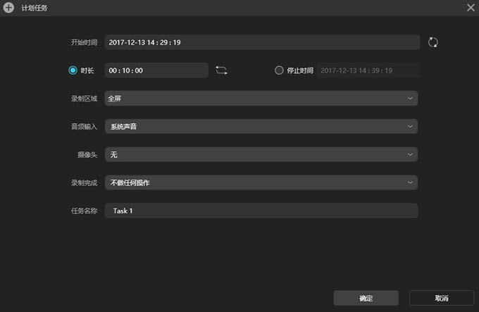
另外一种是“跟随录制”。只要选择您想要跟随的软件，就可以直接开始录制。跟随软件一旦退出，录屏也会立即停止并自动保存。由于该功能开启后会伴随跟随软件同步停止录制，所以非常适用于录制演示或者其他类似场景。
五、截图
作为一款多功能录屏软件，ApowerREC还具有截图功能。如果您想要截图，只需进入主界面，点击左上角“工具”找到“截图”选项，然后点击它就可以开始截图了。按住鼠标左键并拖动选择一个截图区域，再释放鼠标，接着可以给截图添加形状、箭头或者文字。并且还可以对图片进行高亮或者马萨克处理。此外，还可以在线上传您的截图并通过该截图工具快速分享给您的朋友。
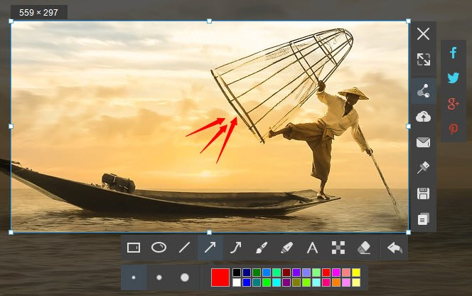
同时，在录屏过程中，可以点击悬浮框上的截图图标，将录屏画面截取并自动保存下来。在主界面的“截图”文件列表中可以找到该截图。